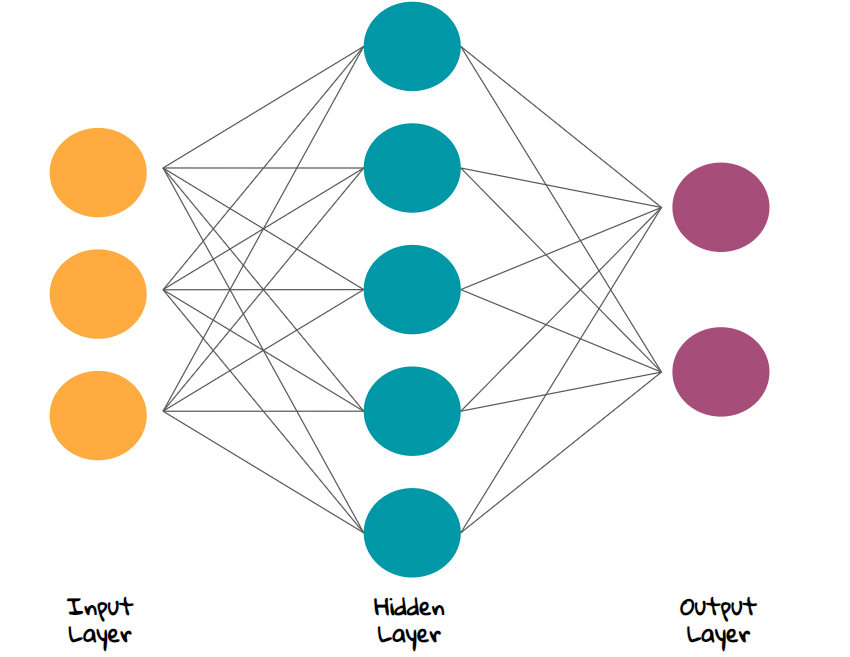

Ένας υποκλάδος της Τεχνητής Νοημοσύνης: η Μηχανική Μάθηση
Τι είναι Μηχανική Μάθηση;
Η Μηχανική Μάθηση είναι υποκλάδος της Τεχνητής Νοημοσύνης ο οποίος χρησιμοποιεί αλγορίθμους οι οποίοι που μπορούν να μαθαίνουν από τα δεδομένα και να κάνουν προβλέψεις σχετικά με αυτά.
Οι αλγόριθμοι αυτοί λειτουργούν κατασκευάζοντας μοντέλα από πειραματικά δεδομένα, προκειμένου να κάνουν προβλέψεις βασιζόμενες στα δεδομένα ή να εξάγουν αποφάσεις που εκφράζονται ως το αποτέλεσμα.
Σε πολλές εφαρμογές είναι ανέφικτο να σχεδιαστεί και να υλοποιηθεί ένας αλγόριθμος ο οποίος να μπορει να λειτουργήσει ρητά, τότε είναι που χρησιμοποιείται η μηχανική μάθηση.
Έτσι, λοιπόν, χρησιμοποιόντας μοντέλα μηχανικής μάθησης μπορεί ο υπολογιστής να μάθει περίπλοκες ιδιότητες των δεδομεών και να εξάγει συμπεράσματα αποτελεσματικά και ακριβή σε πληθώρα εφαρμογών επεξεργασίας φυσικής γλώσσας και υπολογιστικής όρασης.
Ένας υποκλάδος της Τεχνητής Νοημοσύνης: η Βαθυά Μάθηση
Τι είναι Βαθυά Μάθηση;
Η Βαθιά Μάθηση είναι υποκλάδος της Μηχανικής Μάθησης και βασίζεται στα νευρωνικά δίκτυα για την εκμάθηση. Υπάρχουν 3 κατηγορίες μάθησης: supervised, semi-supervised or unsupervised καθώς και πληθώρα αρχιτεκτονικών: deep neural networks, deep belief networks, recurrent neural networks, convolutional neural networks.
Η ιδέα προήλθε από τους βιολογικούς νευρώνες του ανθρώπινου εγκεφάλου και η αρχική προσέγγιση ήταν η προσομοιωση της ανθρώπινης μάθησης.
Στην εικόνα (Figure 1) βλέπουμε πως είναι η δομής ενός απλού νευρωνικού δικτύου και τη δομή των διάφορων επιπεδων από τα οποία αποτελείται!

Figure 1 - Ένα νευρωνικό δίκτυο.